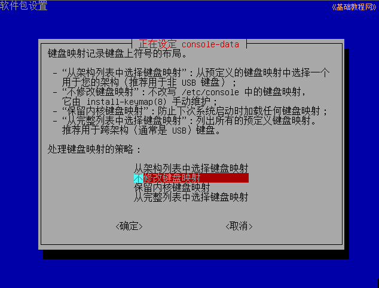

DRBL 操作指南
作者：TeliuTe 来源：基础教程网
十二、用 DRBL 光盘备份还原 返回目录 下一课若是想批量还原或者远程备份，可以使用 DRBL 的光盘，启动后可以作服务器用；
1、启动 DRBL 光盘
1）下载 DRBL 企鹅龙光盘：https://sourceforge.net/projects/drbl/files/drbl_live_stable/；
2）把下载下来的iso镜像刻录成光盘，然后设置为用光盘启动计算机；
3）稍等出来语言选择，按下方向键选择“简体中文”，再按回车键继续；
4）接下来的键盘选项界面，直接按回车键继续；

5）接下来是图形界面设置，直接按回车键使用默认选项；
6）稍等进入桌面，上面有多个应用程序图标，常用的有“启动 DRBL”和“再生龙服务器”，用于整个机房的备份和批量还原 ；
2、使用DRBL无盘服务器
1）点击桌面上的“启动DRBL服务器”，会提示目前是光盘系统，不合适作服务器；
2）按回车键继续，接下来的设定服务器IP，按下方向键选“static”固定IP，按回车键继续；
3）输入常用的固定IP地址(如192.168.1.2)，按回车键继续；
4）其他的网络设定，直接按回车使用默认设定即可，然后启动各个套件，耐心等待即可；
5）安装完成后，就可以像普通的DRBL服务器一样使用了，各个drbl命令都可以使用，只是要注意关机后文件都会丢失；
3、使用再生龙服务器
1）双击桌面上的“再生龙服务器”，先出来一个设置IP，按下方向键选择“static”固定，然后按回车键；
2）输入常用的固定IP地址(如192.168.1.2)，按回车键继续；
3）后面的设定按回车即可，然后进入再生龙的/home/partimag 设定；
4）按回车键选择本地磁盘，出来提示插入U盘，按回车键继续；
`
5）接下来选择挂载 /home/partimg的分区，一般选择最后一个存放备份文件；
6）接下来选择文件夹，直接用根目录即可，按回车键继续，提示需要一定的时间启动 DRBL；
7）后面的操作可参考第6课：http://teliute.org/linux/Tedrbl/lesson6/lesson6.html；
本节学习了用 DRBL 光盘备份还原的基础知识，如果你成功地完成了练习，请继续学习下一课内容；
本教程由86团学校TeliuTe制作|著作权所有
基础教程网：http://teliute.org/
美丽的校园……
转载和引用本站内容，请保留版权信息和本站链接。